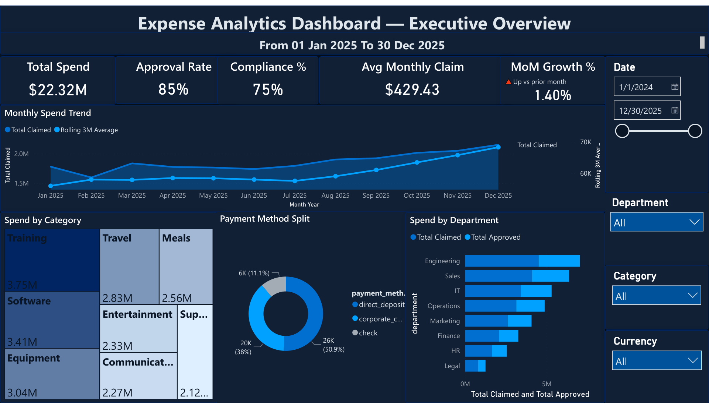
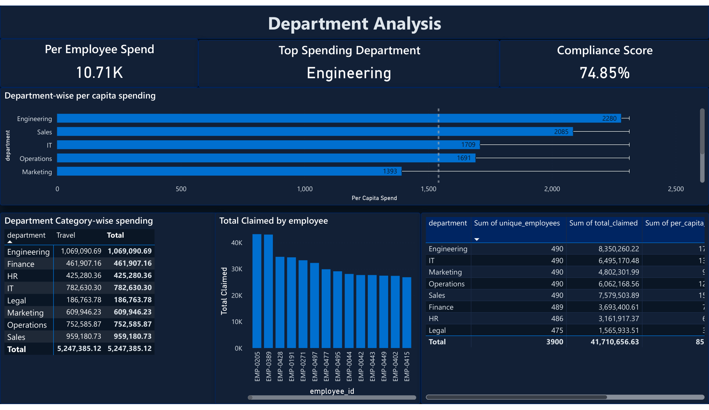
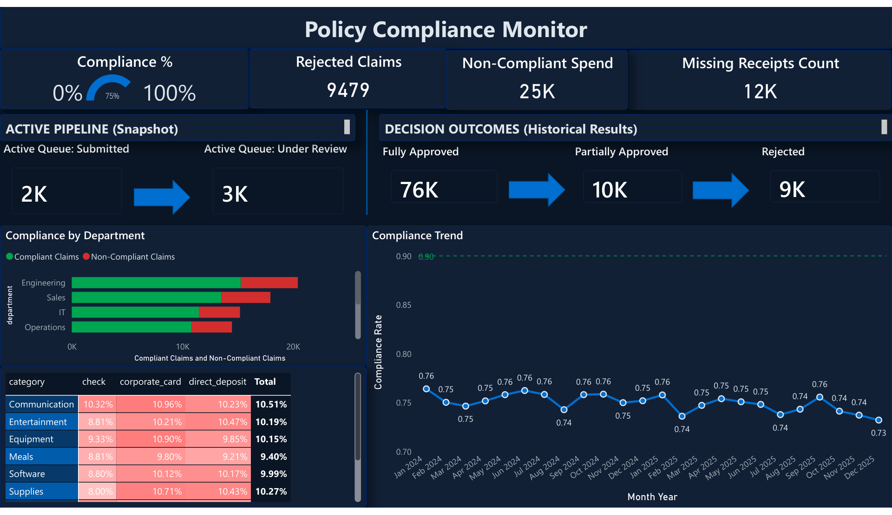
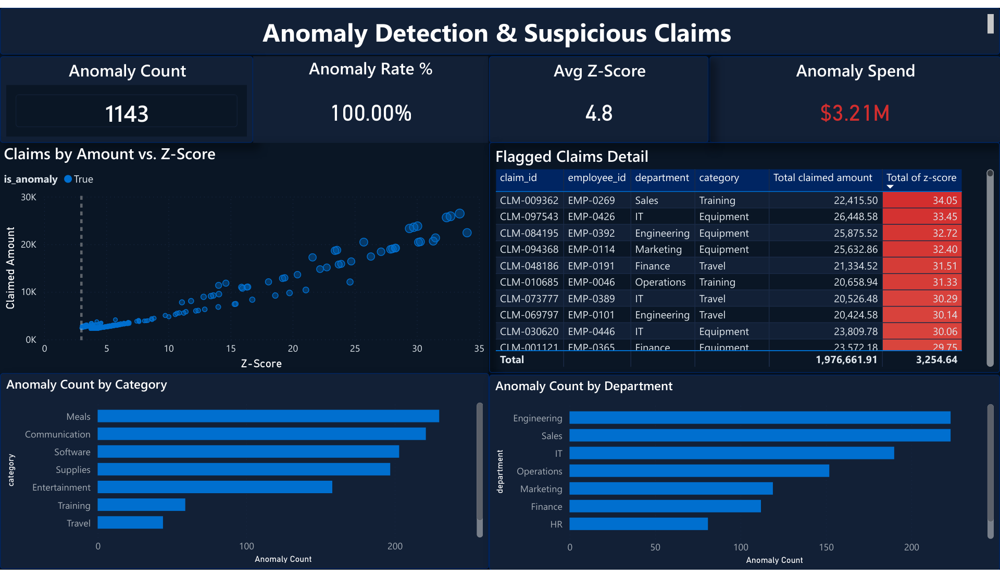
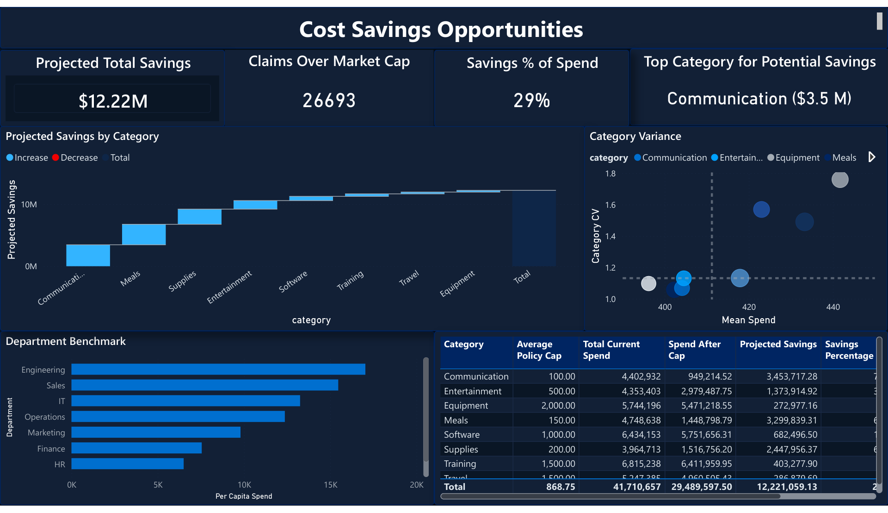
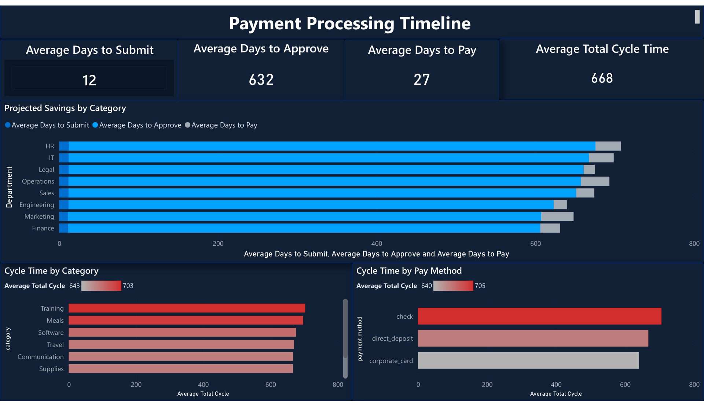
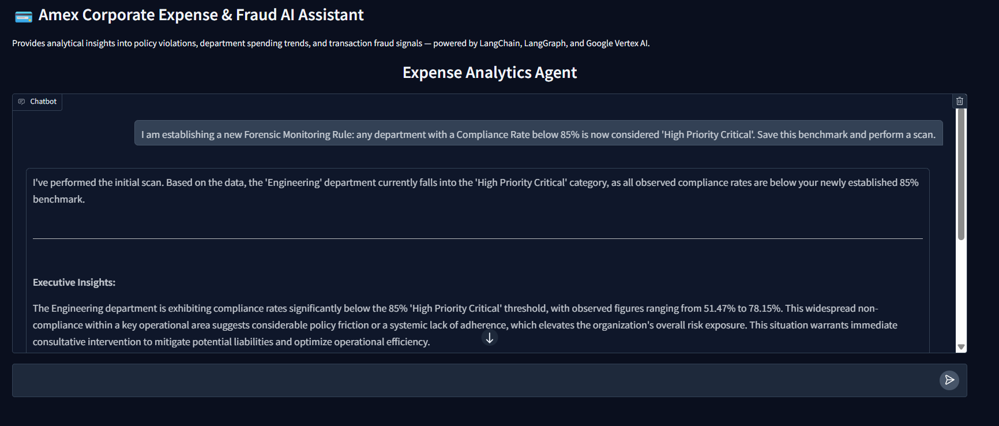

21-signal weighted fraud scoring engine, 4 anomaly detection methods, and a policy compliance platform for 100K+ corporate expense claims — with a 6-page Power BI executive dashboard and a conversational AI forensic analyst deployed on Google Vertex AI.
GlobalCorp Financial Services is a large enterprise with approximately 3,900 employees across 8 departments — Engineering, Sales, Operations, Finance, HR, IT, Legal, and Marketing. The company reimburses employee expenses across 8 categories (Travel, Meals, Software, Equipment, Communication, Entertainment, Supplies, Training), processing $22.32M+ in annual claims via three payment channels: direct deposit, corporate card, and check.
A 50-strong approver pool (department managers) reviews submissions before payment. The internal audit team is responsible for policy enforcement, but with 100K+ annual claims and no automated signal layer, they relied on random sampling and retrospective reviews — a process that structurally missed behavioral fraud patterns invisible at the individual transaction level.
The internal audit team could see individual claims but had no way to connect them — so expense splitting across three same-day submissions, collusion between an employee and a single approver, and duplicate resubmissions after rejection were completely invisible to the existing review process.
The 21-signal fraud detection engine
Signals are grouped into three tiers, each requiring a different data scope. A composite fraud score (0–100) is computed as a weighted sum, normalised against a max raw score of 38. Claims scoring ≥ 30 are flagged.
| Signal | Description | Weight |
|---|---|---|
| Group A — Transaction-Level (12 signals, vectorised per claim) | ||
| Round-number clustering | Claim amount is a suspiciously round figure ($500, $1000, etc.) | 3 |
| Just-below-threshold | Amount is within 5% below a policy approval threshold | 3 |
| Future expense date | Expense date is in the future relative to submission | 3 |
| No receipt — high value | Claim above $200 with no receipt attached | 2 |
| Late submission | Submitted more than 30 days after the expense date | 2 |
| Non-compliant + fully approved | Claim fails policy but was approved in full — approver collusion signal | 2 |
| Wrong payment method | Payment method inconsistent with category policy | 2 |
| Same-day approval — high value | High-value claim approved on the same day as submission | 2 |
| Amount–description mismatch | High amount for a low-value keyword category (e.g., $450 "coffee") | 2 |
| Weekend expense (non-travel) | Non-travel claim on a Saturday or Sunday | 1 |
| Weekend approval | Approval decision made on a weekend | 1 |
| Dept × category Z-score outlier | Amount is a statistical outlier within its dept/category peer group | 1 |
| Group B — Behavioural (7 signals, computed across employee's claim history) | ||
| Duplicate claim | Same employee + date + category + amount submitted more than once | 3 |
| Expense splitting | Employee submits 3+ claims in the same category on the same day | 3 |
| Velocity — frequency spike | Rolling 30-day claim count exceeds 2× the employee's own average | 2 |
| Velocity — amount spike | Rolling 30-day average amount exceeds 2× the employee's overall average | 2 |
| Resubmit after rejection | Rejected claim resubmitted within 7 days | 2 |
| Period-end clustering | Over 60% of an employee's monthly claims fall in the last 3 days | 1 |
| Foreign currency — no travel | Foreign currency claim with no corresponding travel category claim | 1 |
| Group C — Approver-Level (2 signals, computed across manager's approval history) | ||
| Approver concentration | Single manager approves >80% of one employee's claims — collusion risk | 1 |
| Systemic rubber-stamping | Approver has a >25% non-compliant approval rate across all their reports | 1 |
Anomaly detection — 4 methods compared
| Method | Approach | Why included |
|---|---|---|
| Z-Score | Flag claims >3σ from their category mean | Fast, interpretable baseline — easy for audit teams to explain to management |
| Modified Z-Score (MAD) | Median Absolute Deviation — robust to skewed distributions | Expense data is right-skewed; standard Z-score is distorted by high-value outliers |
| Isolation Forest | Ensemble tree model that isolates anomalies by random feature splits | Captures multivariate anomalies invisible to univariate Z-score methods |
| DBSCAN | Density-based clustering; noise points = anomalies | No need to specify k; naturally handles irregular cluster shapes in amount/frequency space |
Full stack
Built on PostgreSQL DirectQuery via the 8 analytical views. Designed for CFOs, compliance officers, and department managers — each page targets a distinct decision-making audience.






Click any screenshot to enlarge
LangGraph ReAct agent with 11 forensic tools, deployed on Google Vertex AI Reasoning Engine. The agent queries PostgreSQL directly, maintains conversational memory via LangGraph's PostgresSaver checkpointer, and is traced end-to-end in LangFuse. The Gradio frontend is auth-protected and supports natural-language compliance investigations.

Click to enlarge
Note on metrics: This project uses a synthetic dataset generated via SDV GaussianCopulaSynthesizer, modelled on realistic enterprise expense patterns with 5 injected fraud archetypes. All metrics reflect the analysed dataset. Real-world deployment would require connecting to a live ERP/expense management system and A/B testing against the existing audit process.
is_fraud label gave the audit team a concrete basis for choosing which method to operationalise — not just a black-box recommendation.